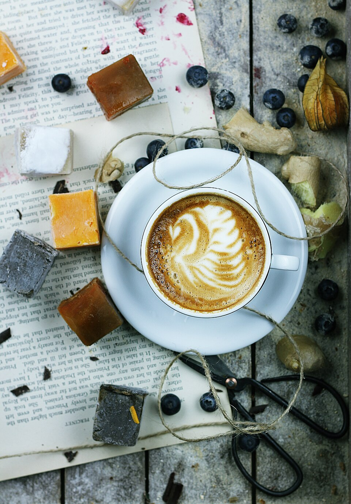

Dialed Espresso Calibration
Our baristas calibrate our grinders multiple times each morning, measuring dry coffee dose, extraction pressure, and liquid yield to ensure sweet, balanced shots with rich hazelnut crema.
Salted Melon was designed as a dynamic third place that adapts to your rhythm throughout the day. In the morning, our baristas craft balanced single-origin espresso and silky textured latte art. By evening, our beverage program shifts into refreshing craft cocktails, paired with an artisan retail market stocked with gourmet pantry staples.

Hand-pulled espresso, craft mixology, and carefully curated grocery shelves.
Our baristas calibrate our grinders multiple times each morning, measuring dry coffee dose, extraction pressure, and liquid yield to ensure sweet, balanced shots with rich hazelnut crema.
Whether using whole dairy from regional farms or organic oat milk, our baristas texture milk to 140 degrees into glossy, dense micro-foam, pouring intricate swan and rosetta latte art on every cup.
Our retail shelves feature artisanal olive oils, local craft hot sauces, organic pasta, specialty crackers, and chilled grab-and-go salads—allowing South End residents to bring everyday gourmet into their homes.